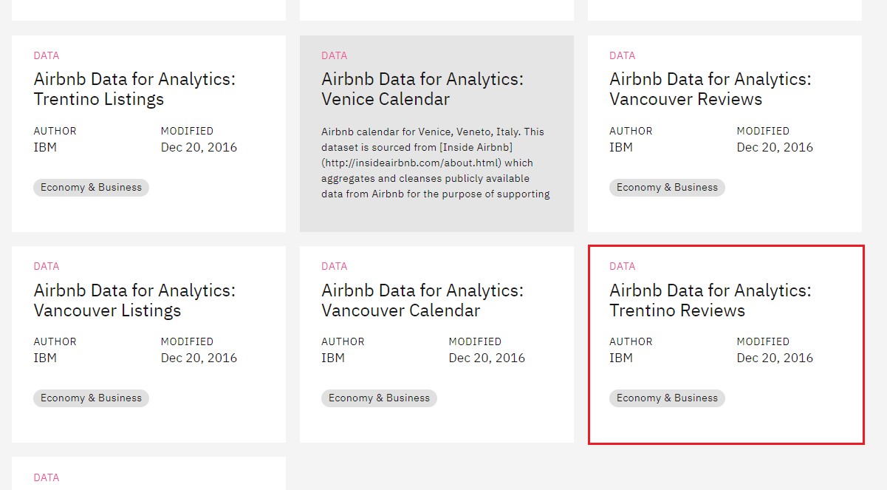
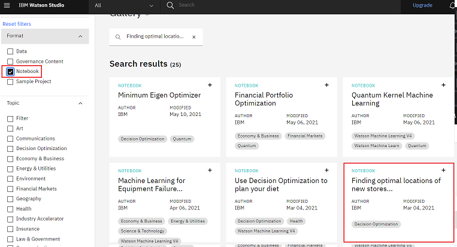
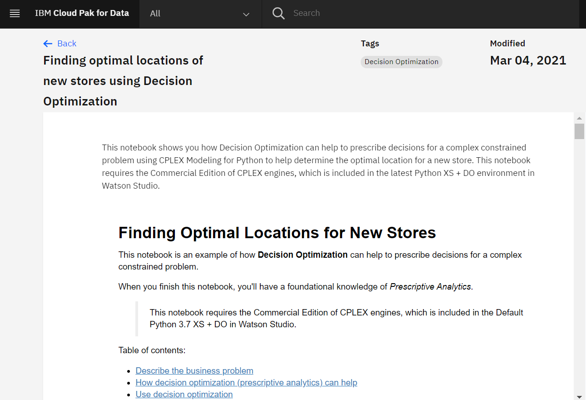
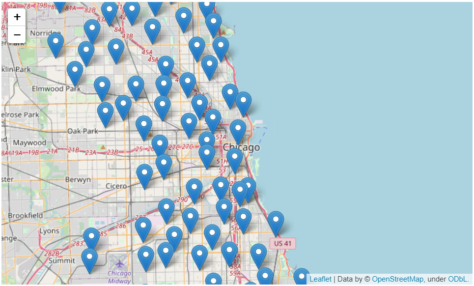
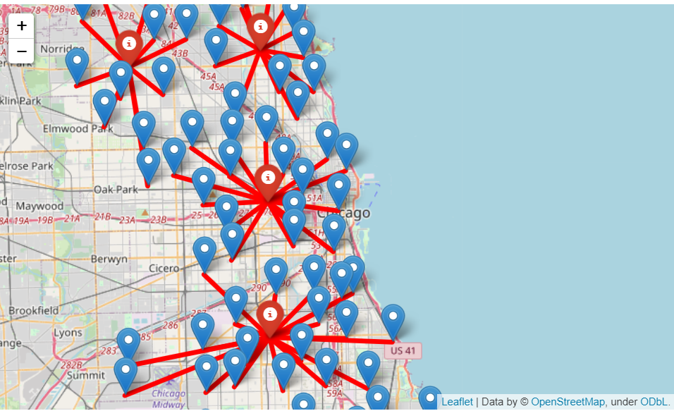

Estimated Time (45 min)
IBM Cloud Gallery is a growing collection of data sets, notebooks, and project templates. In this lab, you will use IBM cloud Gallery to explore different datasets. As we have learnt in the course, the data is not only about numbers, it can be anything such as numeric data, text data, images, videos, audios etc. You will work on three samples.
Sample 1 in which you will learn about the dataset in which only numeric attributes are present.
Sample 2 in which you will learn about the dataset in which numeric & text attributes are present.
Sample 3 in which you will analyze how the Jupyter Notebooks look like. How a Data Scientist create the models?
Let's take a look that how different datasets are used by Data Scientist.
You will learn to:
Click on the link: https://dataplatform.cloud.ibm.com/gallery
Select All Filters. From Format select Data and from Topic select Energy & Utilities, Enviornment and Industry Accelerator
The data is related to forest fires where the aim is to predict the burned area of forest fires, in the northeast region of Portugal, by using meterological and other data.
Attribute Information:
(this output variable is very skewed towards 0.0, thus it may make sense to model with the logarithm transform).
The data doesn't have to be only based on numbers. Data can be text, images and other types as well. Let's look into data having text values.
You will get mutiple datasets given. Scroll down and select Airbnb Data for Analytics: Trentino Reviews (If you will not get the data use the Load More option)
Airbnb, Inc. is an American company that operates an online marketplace for lodging, primarily homestays for vacation rentals, and tourism activities. Airbnb guests may leave a review after their stay, and these can be used as an indicator of airbnb activity.The minimum stay, price and number of reviews have been used to estimate the occupancy rate, the number of nights per year and the income per month for each listing.
This data can be used in various ways - To analyze the star ratings of places, to analyze the location preferences of the customers, to analyze the tone and sentiment of customer reviews and many more. Airbnb uses location data to improve guest satisfaction.
💡 Can you think of what you can use this data for?
The dataset comprises of three main tables:
listings - Detailed listings data showing 96 attributes for each of the listings. Some of the attributes used in the analysis are price(continuous), longitude (continuous), latitude (continuous), listing_type (categorical), is_superhost (categorical), neighbourhood (categorical), ratings (continuous) among others.
reviews - Detailed reviews given by the guests with 6 attributes. Key attributes include date (datetime), listing_id (discrete), reviewer_id (discrete) and comment (textual).
calendar - Provides details about booking for the next year by listing. Four attributes in total including listing_id (discrete), date(datetime), available (categorical) and price (continuous).
Use the All Filters. From Format select Notebook and select Finding optimal locations of new stores using Decision Optimization (If you will not find the notebook use the Load More option to load the notebooks)
This notebook shows you how Decision Optimization can help to prescribe decisions for a complex constrained problem using Python to help determine the optimal location for a new store.
The objective is to minimize the total distance from libraries to coffee shops so that a book reader always gets to our coffee shop easily. It can be done by analyzing and displaying the location of the coffee shops on a map.
When we validate the dataset, the locations on map are seperated.
But it is impossible to determine where to ideally open the coffee shops by just looking at the map.
This is solved by an optimization model that will help us determine where to locate the coffee shops in an optimal way.
In this lab, you have learnt about to explore datasets and notebooks in IBM cloud Gallery.
| Date | Version | Changed by | Change Description |
|---|---|---|---|
| 2022-10-27 | 1.3 | Lakshmi Holla | Updated Instructions |
| 2022-07-22 | 1.2 | Appalabhaktula Hema | Updated Screenshots and instructions |
| 2022-02-16 | 1.1 | Niveditha | Updated watson Screenshot |
| 2021-06-010 | 1.0 | Malika Singla | Initial Version |